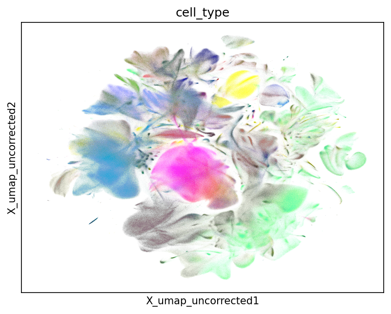
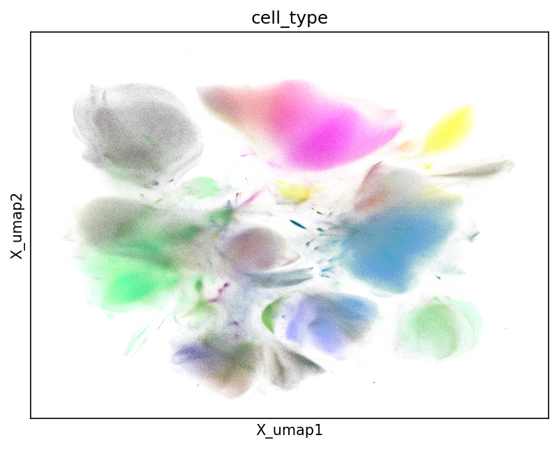
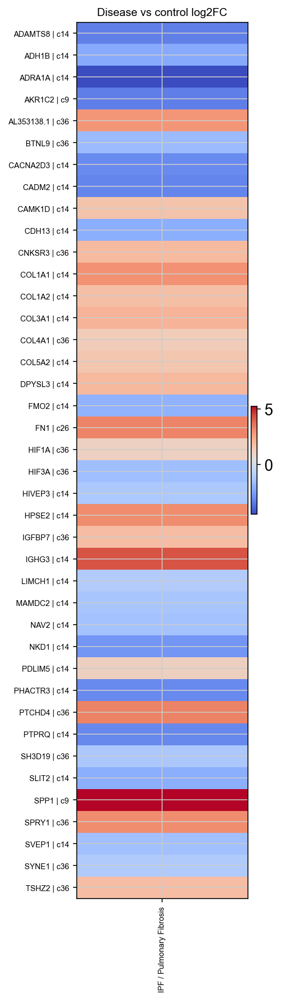

Nygen · thesis update
scBaseCount lung atlas efforts
Acquisition, weak-prior clustering, integrated atlas batch correction, and disease-marker DE (work in progress).
- 01 Data acquisition from scBaseCount
- 02 Clustering with annotation weak priors
- 03 Integrated lung atlas and batch effects
- 04 Disease-marker DE (WIP)
~15 min · open writeups/internal-atlas-deck/deck.html
Why this work
Public atlases are large, noisy, and unevenly labeled
We need a reproducible path from scBaseCount files to an integrated lung view, without treating imperfect labels as truth.
- Hard gates on download, QC, and metadata before anything is “in the atlas.”
- Clustering that uses existing cell_type labels as weak priors, not ground truth.
- Measured batch correction on a multi-study lung concat.
- Next: study-aware disease discovery on that atlas (DE pipeline is WIP).
1 · Data acquisition
Pipeline sketch
From Arc Virtual Cell Atlas / scBaseCount snapshot into a lung-focused concat.
- Human GeneFull h5ads + sample/obs Parquet metadata.
- Catalog via lung disease ∩ tissue filters, then concat gates in h5ad_concat.
1 · Data acquisition
Scale we reached
- Earlier lung intersection catalog: ~801 SRX / ~6.1M cells (filter context).
- v2 pass rate ~78% of attempted files; the rest fail explicit gates (next slides).
1 · Data acquisition
Challenges
Metadata and file quality are the bottleneck, not transfer speed.
- Thin / noisy free-text disease and tissue fields; synonymy across studies.
- Disease–tissue mismatches (e.g. COVID disease labels on non-lung tissue).
- study_accession as batch key collapses donor, disease, and grade into one “batch.”
- Many files missing all cell_type (~half of v2 skips).
- QC can drop large fractions of cells; raw h5ads are counts only (no embeddings).
1 · Data acquisition
Metadata row vs linked study
Free-text atlas fields can disagree with what the linked study actually is. Drop your screenshots into figs/.
figs/metadata-parquet-row.png

figs/linked-study.png

1 · Data acquisition
Learnings: curation is a filter stack
- Enforce MD5, accession match, ≥1 cell_type, minGenesPerCell=200, mito cap, absolute/relative cell floors, STAR gene axis.
- v2 skip mix: missing labels, too few cells, excessive dropout (~78% pass).
- Main idea: do not “download the atlas.” Decide what is allowed in, file by file.
2 · Clustering
Annotations as weak priors, not truth
cell_type labels are CELLxGENE / CXG-aligned curated labels. Useful structure, not ground truth. Using them as both prior and sole evaluation creates circularity.
Resolution chosen by maximizing matched Jaccard against the weak prior.
2 · Clustering
What this buys you
- Resolution adapts to label granularity without hard-coding a single value.
- RF out-of-fold merges collapse unstable splits.
- Agreement metrics (NMI, ARI, NSE, …) show when priors are coarse bins vs when clusters carve finer structure.
2 · Clustering
Evidence snapshot
- Clustering + CyteType at scale on the order of ~113 accessions in writeups.
- Pattern: tight priors (e.g. neutrophils) align well; broad bins systematically disagree and invite splits.
- Depth for Q&A: CyteScore / CyteOnto comparisons and per-type NSE.
3 · Integrated atlas
Integration design
One lung atlas, batch key study_accession.
- Calibrate on a 100k study-proportional sample → scIB validate → Harmony production on the full atlas.
- Caveat baked in: study-level batches fold biology (donor, disease) into “batch.”
3 · Integrated atlas
Quantify, then correct
UMAP colored by cell_type: uncorrected vs Harmony. Interim production plots; replace later with transparent versions under the same filenames.


scIB on 100k sample; modest bio cost for clearer batch mixing.
3 · Integrated atlas
Production outcome
- UMAPs show source cell_type on the integrated embedding, not cluster IDs.
- Approved knobs from parameter selection + subset scIB validation.
4 · Disease-marker DE
Why DE on the atlas
Integrated clusters plus ontology-derived disease / control labels enable study-aware contrasts, not just global marker fishing.
- Prefer same-study diseased vs control where support exists.
- Also screen restricted genes and unexpected expression candidates.
4 · Disease-marker DE
Work in progressStatus and fallback
- Preferred: full-atlas discovery on the server → copy figures into figs/.
- Fallback for this deck: local 100k-sample discovery under agent_analysis.
- Say out loud: 100k is for method / pipeline demo and hypothesis generation, not biological claims.
4 · Disease-marker DE
100k sample · WIPEvidence (swap-ready)

- ~68k eligible cells · 95 studies · 16 contrasts · 928 DE hits on the 100k sample.
- Also: restricted-gene and unexpected-expression shortlists for review.
- If production lands: replace figs/de_evidence.png and update these numbers from that run’s summary.
Takeaways
Where we are
- Acquisition needs hard gates; metadata lies until checked.
- Weak priors guide clustering without becoming truth.
- Harmony improves batch metrics with a modest bio cost.
- DE discovery is next and currently WIP (full atlas pending / 100k fallback).
Open: prior vs held-out truth; study-level batch key limits; which DE candidates survive full-atlas replication.
Downstream TODO: run this path on Scarf. AnnData-style workflows carry nearly ~100 GB of disk overhead and leave server headroom tight; Scarf’s sparse / out-of-core design is the natural fit once discovery methods stabilize.